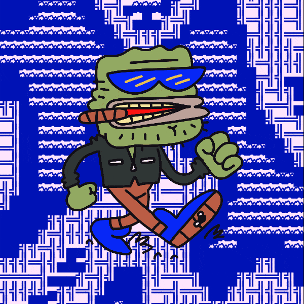

Mint status: PUBLIC

Collection of 6,969
Mint Price: 150 CANTO
Free 1-for-1 claims available to all original CrypToadz by Gremplin & Terraforms by Mathcastles
Please connect your wallet!
-
1
+
Price: 150 CANTO
Mint!
0/6969